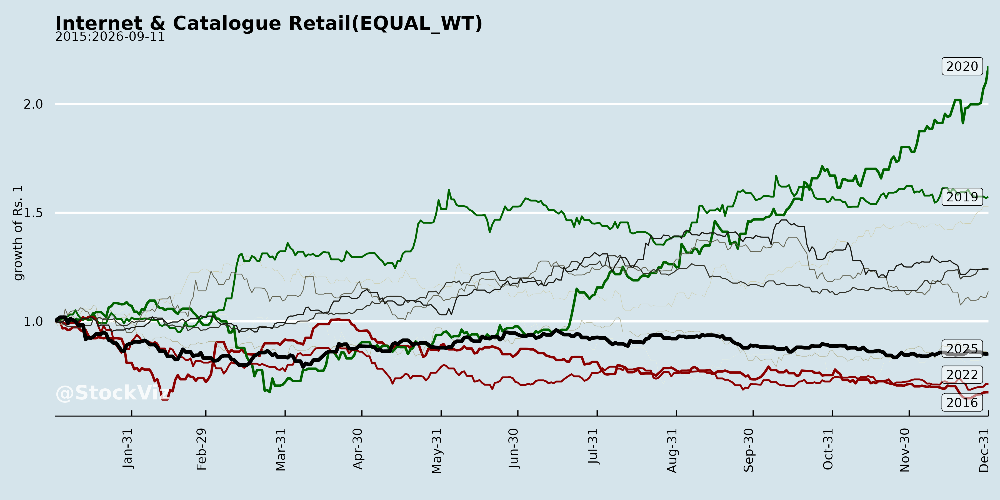
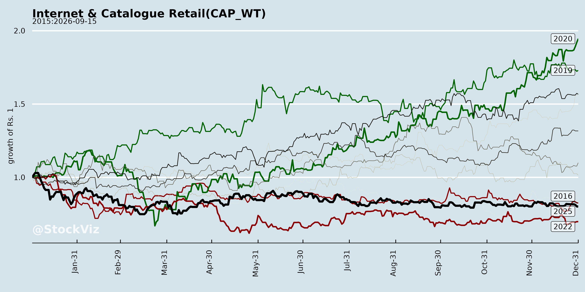
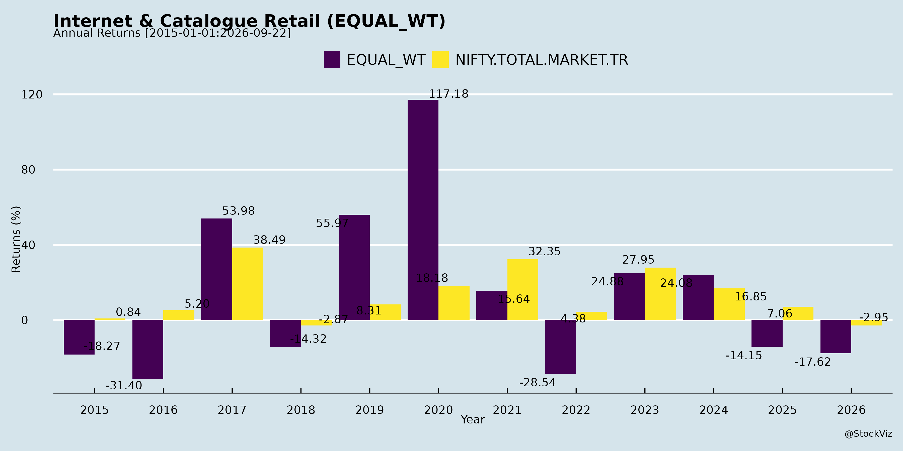
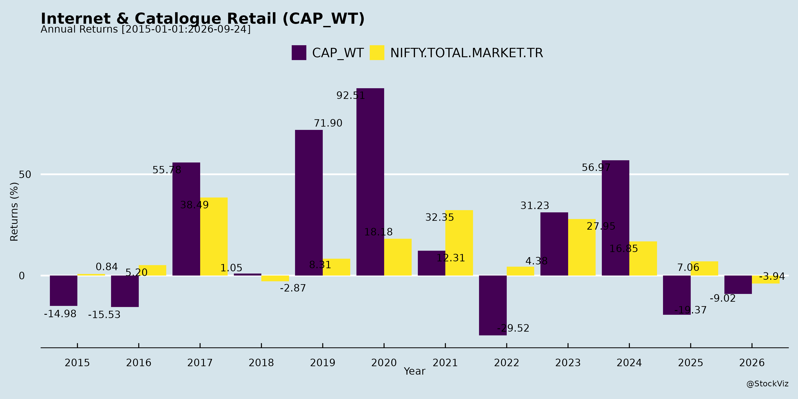
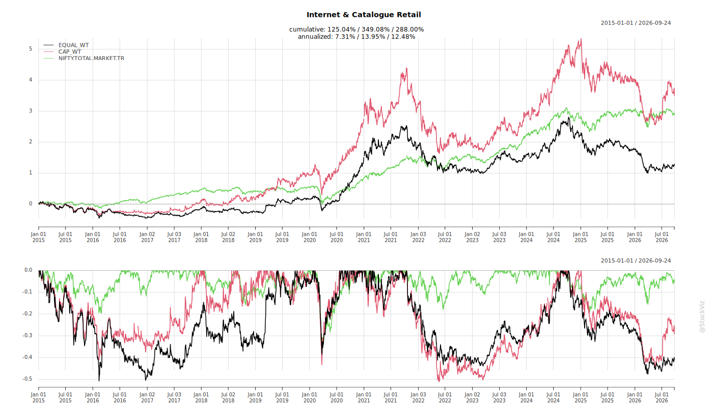
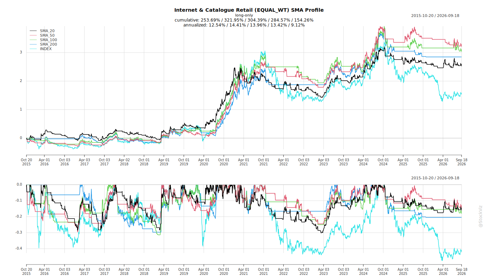
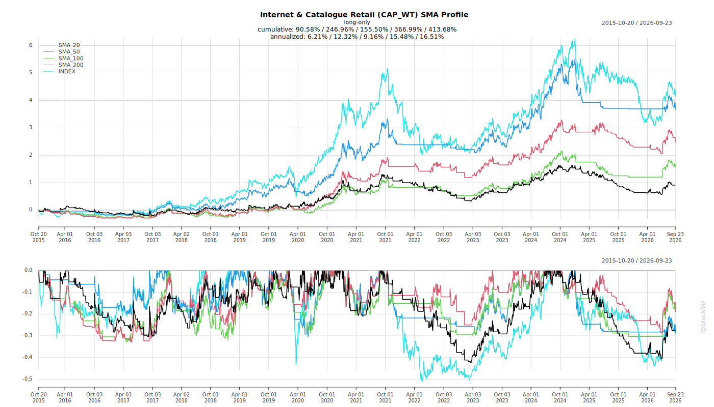
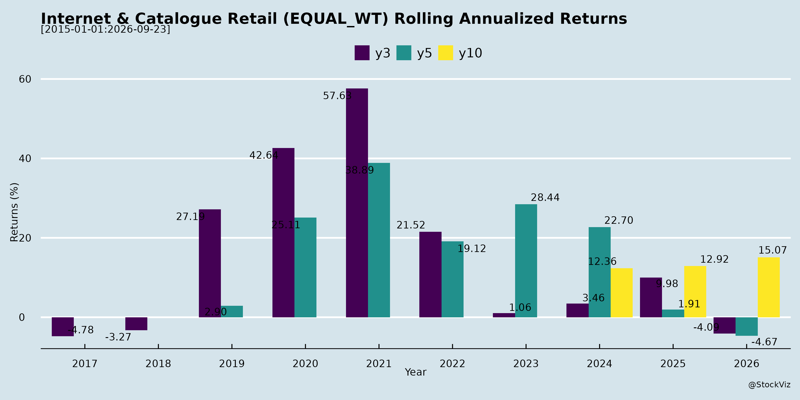
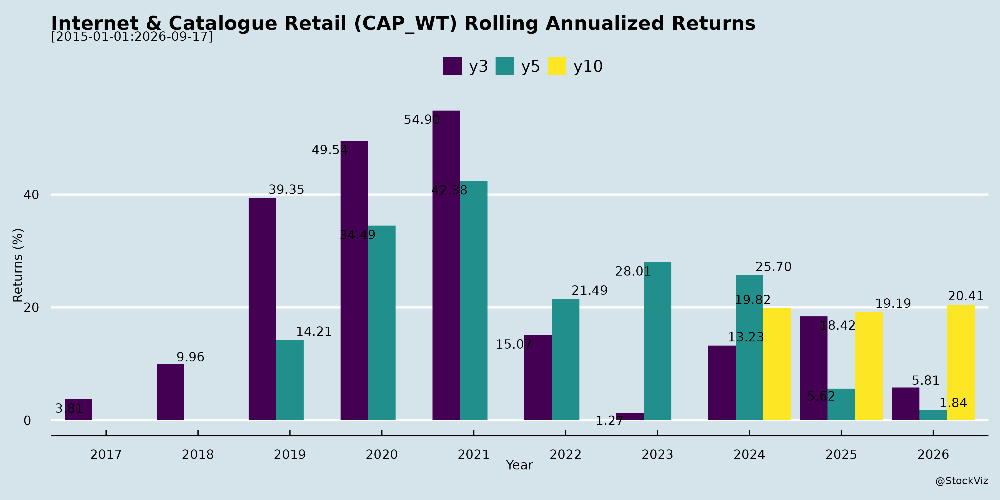

Annual Returns




Cumulative Returns and Drawdowns

SMA Scenarios


Current Distance from SMA
Rolling Returns


EBIT (% of Industry Total)
Revenue (% of Industry Total)
AI Summaries
Analyst
asof: 2025-11-26
Analysis of Indian Internet & Catalogue Retail Sector
(Based on Q4 FY25/Q2 FY26 earnings transcripts and announcements from Just Dial, Matrimony.com, Info Edge (Naukri/99acres/Jeevansathi/Shiksha), IndiaMart, and Crizac. These represent key players in online classifieds, local search, matrimony, recruitment, real estate, B2B marketplaces, and education services. Sector themes emphasize resilient platforms amid macro softness, with focus on efficiency, AI, and niche expansion.)
Tailwinds
- Strong Platform Metrics & Digital Shift: Traffic growth robust (e.g., Just Dial: 11.8% YoY unique visitors, 15% mobile; Info Edge: healthy CV searches/views/additions). Mobile dominance (87% at Just Dial) and listings expansion (Just Dial: 48.8M listings +11.9%; 99acres: +23-37% live listings) support user engagement.
- Operational Efficiency & Margins: High EBITDA margins (Just Dial: 29.8%; Naukri: 56% standalone) via cost controls (e.g., telesales optimization, cold-calling reduction). Cash generation strong (Naukri: ₹325Cr/Q2; Matrimony: ₹14.6Cr ops cash).
- AI & Tech Leverage: Widespread adoption for personalization, content, sales leads, and new products (e.g., Info Edge AI co-pilot/Resdex; Matrimony AI chatbot; Just Dial AI reviews/portfolios). Improves productivity (2.5-3x telesales) and user experience.
- Cash Rich Balance Sheets: Enables investments (Info Edge: ₹4,823Cr; Just Dial: ₹5,279Cr; Matrimony: ₹328Cr). Supports marketing, R&D, and shareholder returns (e.g., Naukri interim dividend; Just Dial dividend policy soon).
- Niche Opportunities: GCC hiring (18% at Naukri), resale/rental (99acres mid-teens growth), premium talent/blue-collar (Hirist/iimjobs/JobHai), Hindi matrimony (Jeevansathi 29%).
Headwinds
- Macro & Hiring Slowdown: Uncertain environment (e.g., Naukri: modest 11-12% billings; IT/BPM +7%; impacted by elections, festivals, global GDP/AI noise). Collections lag revenue (Just Dial: 6-7% early FY25 to 11%; Matrimony billing-revenue gap from long-term packs).
- Competitive Intensity: High marketing spends (Matrimony: TV/digital; Info Edge: up in 99acres/Jeevansathi/JobHai). Share battles (99acres traffic 47-50% vs. peers mid-20s; matrimony ~55-60%).
- Monetization Lag: Traffic/inquiries up but billings moderate (99acres: mid-teens despite share gains; Shiksha: AI search shift erodes SEO traffic).
- Seasonality & External Factors: Q3 weak (festivals/holidays); pricing hikes tough in soft market (Just Dial/Naukri).
- Ad Cost Pressures: Rationalization ongoing but TV/digital competition persists (Matrimony/Just Dial).
Growth Prospects
- Mid-Teens Revenue Acceleration: Targets 12-15% (Just Dial: from 9.5% FY25; Naukri: cautiously optimistic; Matrimony: double-digit Q3+). Driven by volumes (customer count), pricing (dynamic/underpriced categories), and traffic conversion.
- Geographic/Category Expansion: Tier 2/3, SMEs, non-IT (Naukri: 10-15%; Just Dial: top-11 cities 56.5% revenue). Adjacent plays (Matrimony: jobs/love.com/wedding commissions; Info Edge: AI products/JobHai).
- Freemium & Premiumization: Success in Jeevansathi (29% growth), NaukriGulf (22%), blue-collar (JobHai). Long-term packs boost ATV (Matrimony +10.8%).
- Market Share Gains: Sustained marketing yields traffic dominance (99acres +0.5-1%/month); AI enhances retention/monetization.
- FY26 Outlook: Stable margins (25-30%+), EBITDA growth > topline via leverage. Potential cash returns (dividends/buybacks) post policy finalization.
| Just Dial |
Mid-teens topline @ 29-30% margins |
Ads, pricing, traffic |
| Matrimony |
Double-digit Q3+; ₹500Cr annual matchmaking |
Long-pack recognition, AI |
| Info Edge (Standalone) |
12-15% (recruitment resilient; non-recruitment scaling) |
GCCs, premium/blue-collar, share gains |
| Others (IndiaMart/Crizac) |
N/A (investor meets signal stability) |
Public info focus |
Key Risks
- Prolonged Demand Weakness: Hiring freeze (IT/recruiters hit hardest; Naukri JobSpeak soft). GCC/H1B policy flux could backfire.
- Traffic/Monetization Disruption: AI search (Google/ChatGPT) erodes SEO (Shiksha degrowth); delayed conversion (99acres inquiries up but billings lag).
- Execution on Initiatives: New products (AI co-pilots, matrimony expansions, JobHai) early-stage; scaling challenges (Zwayam/DoSelect). Capital burn (Matrimony new ventures ~few Cr/Q).
- Competition & Pricing Pressure: Peers (LinkedIn, Shaadi) force marketing escalation; Tier 2/3 ARPU dilution.
- Capital Allocation/Regulatory: Delays in dividends/buybacks (Just Dial/Matrimony); tax rates normalizing (20-25%); NCLT merger delays (Info Edge).
- Macro/Geopolitical: GDP slowdown, global events (US elections, wars) impact IT/GCCs.
Overall Summary: Sector resilient with 10-15% growth amid soft macros, buoyed by efficiency (high margins/cash flows) and AI tailwinds. Tailwinds from digital penetration/digital India outweigh headwinds like hiring slowdowns, but risks center on execution and external demand. Prospects brighten with share gains and premiumization; monitor Q3 billings for confirmation. Valuations supported by cash hoards but hinge on topline acceleration.
General
asof: 2025-11-26
Analysis of Indian Internet & Catalogue Retail Sector
(Based on Q2/H1 FY26 financial filings of key players like IndiaMART InterMESH Ltd. (B2B catalogue platform), Info Edge (online classifieds including retail/job portals), Matrimony.com, and Crizac Ltd. IndiaMART serves as the primary proxy for “Catalogue Retail” – online B2B product/service catalogues. Sector trends reflect digital marketplaces amid rising SME adoption, e-commerce growth, and online services.)
Tailwinds (Positive Factors Driving Growth)
- Robust Revenue Momentum: IndiaMART reported 12% YoY H1 revenue growth to ₹7,631 Cr (web services up 13%), driven by lead generation, subscriptions, and advertising. Sector benefits from India’s digital economy (800M+ internet users), with SMEs increasingly using online catalogues for B2B discovery.
- Strong Liquidity & Balance Sheet: IndiaMART holds ₹27K+ Cr in liquid investments/cash (stable total assets ~₹41K Cr). High dividend payouts (₹3K Cr in H1 FY26) signal confidence. Low debt (mostly leases) supports investments/acquisitions.
- Digital Tailwinds: Govt. initiatives (Digital India, ONDC) boost online platforms. Rising ad spends and subscription models (contract liabilities ₹17.5K Cr at IndiaMART) provide recurring revenue.
- Operational Efficiency: IndiaMART’s cash from ops ₹2.75K Cr (H1); function-wise P&L shows customer service surplus scaling with revenue.
Headwinds (Challenges & Pressures)
- Margin Compression: IndiaMART Q2 net profit down 39% YoY to ₹826 Cr (H1 down 5%) due to 16% rise in employee costs (₹3.3K Cr, 41% of expenses) and other expenses up 35% (marketing/sales). Sector faces talent wars in tech/digital space.
- Associate/Investment Drag: ₹275 Cr share of associate losses (H1); impairments (e.g., ₹160 Cr in standalone). IndiaMART’s investments in startups (e.g., Fleetx, Trackhall) volatile.
- Execution Costs: Outsourced sales/content up sharply; regulatory scrutiny (GST/service tax demands ₹219 Cr contingent).
- Macro Slowdown: Ad/other income volatile (down 85% QoQ at IndiaMART due to fair value gains normalization); potential rural slowdown impacting SME demand.
Growth Prospects
- High Double-Digit Expansion: Sector poised for 15-20% CAGR through FY28 (IndiaMART web services ~₹7K Cr H1). Untapped SME digitization (60M+ SMEs, <20% online); catalogue model scales with AI/lead gen.
- Diversification & M&A: IndiaMART’s subsidiaries (Busy Infotech accounting software up sharply) and associates signal adjacencies (jobs via Info Edge, matrimony). New launches (e.g., IIL Digital) and overseas (Crizac UK).
- Subscription-Led Model: Deferred revenue ₹17.5K Cr (up 4%); activation/lead-based recurring streams resilient.
- Sector Multipliers: E-commerce GMV to hit $350B by 2026 (NASSCOM); B2B subset (IndiaMART-like) to grow 25%+ on exports/SME formalization.
Key Risks
| Financial/Investment |
Associate losses (₹133 Cr Q2), impairments (₹160 Cr); 40% investments unquoted/illiquid. |
Diversified portfolio; ₹28K Cr current investments. |
| Regulatory/Tax |
Contingent liabilities ₹219 Cr (GST/ITC disputes); Provident Fund Supreme Court ruling ambiguity. |
Appeals filed; strong legal position (no provisions). |
| Operational |
Employee costs 41% of expenses; keyman risk (CFO changes at Info Edge). |
Share-based incentives (₹177 Cr expense); deep bench. |
| Market/Competition |
Ad volatility, competition (e.g., Meesho B2B, Amazon Business); SME cyclicality. |
70%+ market share in B2B search; sticky subscriptions. |
| Execution |
High capex on intangibles (₹15 Cr under dev.); lease/land disputes. |
Cash generative (₹2.5K Cr ops cash H1). |
Overall Summary: Sector enjoys strong tailwinds from India’s digital boom, with IndiaMART exemplifying resilient growth (12% revenue, stable ROE ~50%). Headwinds from costs/investments cap near-term margins (PAT growth < revenue), but prospects remain bright (15-20% CAGR) via SME penetration. Risks are manageable (mostly contained liabilities), but monitor investment impairments and talent retention. Bullish long-term; neutral short-term due to profitability dip.
Investor
asof: 2025-11-26
Summary Analysis: Indian Internet & Catalogue Retail Sector
(Based on Q2 FY26 disclosures from Just Dial, Matrimony.com, Info Edge (Naukri), IndiaMart, and Crizac – representing local search/directories, matrimony, recruitment/classifieds, B2B marketplaces, and edtech verticals. Sector characterized by high-margin platforms with scalable traffic/listings monetization via paid campaigns/subscriptions.)
Tailwinds (Positive Drivers)
- Robust Platform Metrics & User Engagement: Just Dial reports 197.7M quarterly unique visitors (+2% QoQ), 51.2M listings (+3% QoQ), 154.7M ratings/reviews (+1% QoQ), and 623k active paid campaigns (+1% QoQ). Info Edge’s Naukri has 111M resumes; 99acres traffic share at 47-50%. High engagement supports premium pricing (e.g., Just Dial ATV implied via revenue growth).
- Resilient Revenue/Margins: Just Dial operating revenue ₹3,031 Cr (+6% YoY), EBITDA margin 28.7%; Naukri billings +11% YoY (recruitment), margins 56%. Matrimony billing +7% YoY, targeting double-digits. Cash generation strong (Just Dial ₹293 Cr ops cash Q2; Info Edge ₹302 Cr).
- Digital Shift & SME Focus: Growing listings (Just Dial +3% QoQ), AI tools (chatbots, ratings), expansions (JD Mart B2B, JD Homes rentals). GCC hiring +18% (Naukri); matrimony freemium success (Jeevansathi +29% YoY).
- Cash-Rich Balance Sheets: Just Dial ₹55.7 Bn cash/investments (+13% YoY); Info Edge ₹4,823 Cr. Enables investments (e.g., Matrimony’s AI astrology stake).
Headwinds (Challenges)
- Macro/Hiring Slowdown: Naukri cautious on IT/BPM (billing +7% YoY but modest); JobSpeak index weak (Oct 2025). Festival seasonality (Diwali shifts) impacts Q3 visibility.
- Billing-Revenue Lag: Matrimony’s long-term packages cause ₹20 Cr gap (billing +7% vs revenue -1% YoY); deferred recognition pressures near-term P&L.
- Traffic/SEO Risks: Shiksha traffic decline due to Google AI overviews/summaries; static content vulnerable.
- Marketing Intensity: Elevated spends (Matrimony ₹46 Cr; 99acres investments for share gains) amid competition (Jeevansathi North focus).
Growth Prospects (Medium-Term Outlook: FY26-28)
- Double-Digit Billings: Matrimony Q3 double-digits; Naukri cautiously optimistic (diversification: GCC/SMEs/non-IT +11-18%). Just Dial sustained 6-14% YoY revenue trajectory via traffic (+2% QoQ).
- Vertical Expansions: Just Dial (JD Omni, JD Homes, B2B Mart); Info Edge (JobHai blue-collar, premium iimjobs/Hirist + scaling); Matrimony (AI astrology, wedding commissions). 99acres mid-teens growth via traffic share (47-50%).
- AI/Monetization Levers: AI copilots (Naukri Resdex), chatbots (Matrimony), content gen (marketing efficiency). Premiumization (higher CTC hires); freemium ramps (Jeevansathi breakeven).
- Sector Tailwinds: Internet penetration, SME digitization, GCCs (1.7M jobs), Tier-2/3 hiring. Potential consolidation (Info Edge open in matrimony/real estate).
Projected Sector Growth: 12-15% CAGR FY26-28 (recruitment resilient at 10-12%; classifieds 15-20% via traffic/AI), margins 25-35% (leverage post-scale).
Key Risks
| Macro/Economic |
Hiring freeze (IT slowdown), GDP volatility; festival seasonality. |
Diversification (GCC/non-IT 50%+ Naukri billings); cash buffers. |
| Competition |
Intense ad wars (matrimony/real estate); new AI natives (e.g., Mercury). |
Traffic share gains (99acres +12 pts YoY); data moats. |
| Tech/Platform |
AI disruption (SEO traffic -ve, e.g., Shiksha); product execution delays. |
Internal AI investments; pilots (copilots, genAI content). |
| Execution |
New initiatives burn (JobHai ₹40 Cr/yr; 99acres losses ₹23 Cr Q2); billing-revenue gaps. |
Proven scaling (NaukriGulf +22% YoY profitable); ops cash +12% YoY. |
| Regulatory |
Compliance (SEBI filings routine); consolidation antitrust. |
Strong governance (board/independents). |
Overall Outlook: Sector resilient (12% H1 billings growth despite headwinds), with AI/digital tailwinds driving 15%+ prospects. Near-term caution (Q3 lumpiness), but cash-rich platforms position for M&A/scale. Risks tilted macro/tech, balanced by moats (traffic/data). Recommendation: Hold/Buy dips for long-term compounding (high ROCE potential post-consolidation).
Press Release
asof: 2025-11-26
Summary Analysis: Indian Internet & Catalogue Retail Sector
(Based on Q2FY26 results from key players: IndiaMART (B2B marketplace), Just Dial (local search/B2B), Info Edge/Naukri (recruitment/classifieds), Matrimony.com (matrimony), Crizac (education recruitment). Sector characterized by online classifieds, B2B/B2C marketplaces, recruitment, real estate, matrimony, and education services. Focus on digital platforms with subscription/deferred revenue models.)
Tailwinds (Positive Drivers)
- Digital Adoption & Traffic Resilience: Mobile traffic dominance (Just Dial: 87% mobile, +2% YoY; Info Edge/Naukri: 75%+ traffic share). Listings growth (Just Dial: +11% YoY active listings; 99acres: +23% new projects).
- Revenue & Billings Momentum: Steady YoY growth (IndiaMART: 12% revenue; Just Dial: 6% operating revenue; Info Edge recruitment: 11% billings; Matrimony: 7%; 99acres/Jeevansathi: mid-teens). Deferred revenue up (IndiaMART: +18%; Just Dial: +2%).
- Cash Generation & Balance Sheets: Strong liquidity (Just Dial: ₹5,570 Cr cash/investments; IndiaMART: ₹2,874 Cr; Info Edge: ₹4,823 Cr standalone). Operating cash flow resilient (IndiaMART: +11%; Info Edge recruitment: +13%).
- Diversification & Expansion: International/acquisition plays (Crizac: UK subsidiary acquiring Latin America focus); new services (Matrimony: ManyJobs monetization); B2C ventures (Info Edge: Zwayam, DoSelect).
Headwinds (Challenges)
- Profitability Pressure: Net profit declines (IndiaMART: -39% YoY due to lower other income; Just Dial: -23%; Info Edge consolidated influenced by non-core losses). EBITDA margins stable but thin (IndiaMART: 33%; Just Dial: 29%).
- Sector-Specific Slowdown: Hiring uncertainty (Info Edge: resilient but moderated growth); flat traffic in some (Just Dial: -0.2% unique visitors YoY).
- Cost Inflation: Employee expenses up (Info Edge: +15% YoY); advertising spends (Just Dial: ₹9 Cr); unallocable expenses rising.
- Macro Sensitivity: Dependence on cyclical sectors (recruitment: IT/BPM ~30-35%; real estate slowdown risks).
Growth Prospects
- High (Medium-Term: 10-20% CAGR): B2B/B2C expansion (IndiaMART collections +14%; 99acres market share to 49%). Non-recruitment scaling (Jeevansathi breakeven +29% billings; Shiksha profitable +13%). Tech/AI leverage (Just Dial R&D; Crizac global sourcing). Portfolio investments (Info Edge: 21 active unlisted, strong listed like PB Fintech/Eternal).
- Catalysts: Rising SMB penetration, Tier-2/3 focus (Naukri: +11% customers); international diversification; monetization (accommodations/loans in Crizac/Info Edge).
- Outlook: FY26 revenue growth ~10-15% sector-wide, driven by deferred revenue conversion and cash-rich balance sheets enabling M&A.
Key Risks
| Macro/Economic |
Hiring slowdown (IT/GCCs); real estate cycle; inflation impacting SMBs. |
Diversified verticals (recruitment 70%+ revenue but non-core growing). |
| Competitive |
Traffic wars (99acres vs. Magicbricks/Housing); new entrants in matrimony/education. |
Dominant shares (Naukri 75%; 99acres 49%); product innovation (AI/chat). |
| Operational/Financial |
Volatility in other income/exceptionals (Info Edge: ₹52k Cr gain); high capex (Just Dial R&D). |
Strong cash buffers (₹10k+ Cr aggregate); deferred revenue visibility. |
| Regulatory |
SEBI compliance, tax changes (deferred tax hits); antitrust in marketplaces. |
Robust disclosures; audited results. |
| Execution |
Integration risks (Crizac acquisition); whistleblower probes (Info Edge 99acres). |
Independent audits; ongoing investigations (no material impact yet). |
Overall Sector Outlook: Resilient amid uncertainty, with tailwinds from digital shift outweighing headwinds. Growth anchored in B2B stability and non-core inflection; risks tilted macro/competitive but buffered by cash. Bullish on leaders like Info Edge/IndiaMART (EV/EBITDA ~20-30x justified by 15%+ growth).
Copyright © 2023 SAS Data Analytics Pvt. Ltd. All rights reserved.
🐞